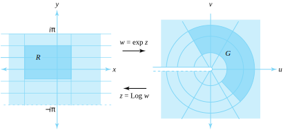
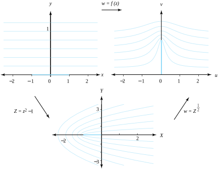
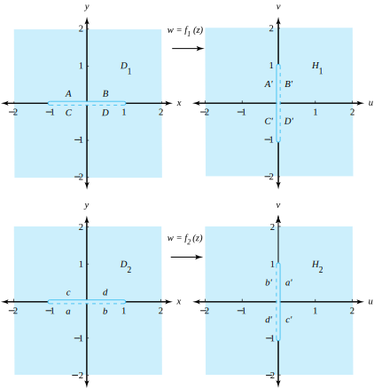
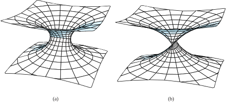

In Section 5.1 we showed that the function \(w=f(z) =\exp z\) is a one-to-one mapping of the fundamental period strip \(-\pi\lt y\le\pi\) in the \(z\) plane onto the \(w\) plane with the point \(w=0\) deleted. Because \(f\,'(z) \ne 0\text{,}\) the mapping \(w=\exp z\) is a conformal mapping at each point \(z\) in the complex plane. The family of horizontal lines \(y=c\) for \(-\pi\lt c\le\pi\) and the segments \(x=a\) for \(-\pi\lt y\le\pi\) form an orthogonal grid in the fundamental period strip. Their images under the mapping \(w=\exp z\) are the rays \(\rho>0\) and \(\phi=c\) and the circles \(|w|=e^a\text{,}\) respectively. These images form an orthogonal curvilinear grid in the \(w\) plane, as shown in Figure 9.3.1. If \(-\pi\lt c\lt d\le\pi\text{,}\) then the rectangle \(R=\{x+iy:a\lt x\lt b, \; c\lt y\lt d\}\) is mapped one-to-one and onto the region \(G=\{\rho e^{i\phi} : e^{a}\lt \rho\lt e^{b}, \; c\lt \phi\lt d\}\text{.}\) The inverse mapping is the principal branch of the logarithm \(z=\mathrm{Log}\,w\text{.}\)

Figure9.3.1.The conformal mapping \(w=\exp z\)
In this section we show how compositions of conformal transformations are used to construct mappings with specified characteristics.
Example9.3.2.
Show that the transformation \(w=f(z) =\frac{e^{z}-i }{e^{z}+i}\) is a one-to-one conformal mapping of the horizontal strip \(0\lt y\lt \pi\) onto the disk \(|w\lt 1|\text{.}\) Furthermore, the \(x\)-axis is mapped onto the lower semicircle bounding the disk, and the line \(y=\pi\) is mapped onto the upper semicircle.
Solution.
The function \(f\) is the composition of \(Z=\exp z\) followed by \(w=\frac{Z-i}{ Z+i}\text{.}\) The transformation \(Z=\exp z\) maps the horizontal strip \(0\lt y\lt \pi\) onto the upper half plane \(\mathrm{Im}(Z) >0\text{;}\) the \(x\)-axis is mapped on to the positive \(x\)-axis; and the line \(y=\pi\) is mapped onto the negative \(x\)-axis. Then the bilinear transformation \(w=\frac{Z-i}{Z+i}\) maps the upper half plane \(\mathrm{Im}(Z) >0\) onto the disk \(|w|\lt 1\text{,}\) the positive \(x\)-axis is mapped onto the lower semicircle; and the negative \(x\)-axis onto the upper semicircle. Figures 9.3.4 and Figure 9.3.5 illustrate the composite mappings.
Example9.3.3.
Show that the transformation \(w=f(z) =\mathrm{Log}(\frac{1+z}{1-z})\) is a one-to-one conformal mapping of the unit disk \(\left\vert z\right\vert \lt 1\) onto the horizontal strip \(|v|\lt \frac{\pi}{2}\text{.}\) Furthermore, the upper semicircle of the disk is mapped onto the line \(v=\frac{\pi}{2}\) and the lower semicircle onto \(v=-\frac{\pi}{2}\text{.}\)
The function \(w=f(z)\) is the composition of the bilinear transformation \(Z=\frac{1+z}{1-z}\) followed by the logarithmic mapping \(w= \mathrm{Log}z\text{.}\) The image of the disk \(|z|\lt 1\) under the bilinear mapping \(Z=\frac{1+z}{1-z}\) is the right half-plane \(\mathrm{Re}(Z)>0\text{;}\) the upper semicircle is mapped onto the positive \(y\)-axis; and the lower semicircle is mapped onto the negative \(y\)-axis. The logarithmic function \(w=\mathrm{Log}\,Z\) then maps the right half-plane onto the horizontal strip, the image of the positive \(y\)-axis is the line \(v=\frac{\pi}{2}\text{,}\) and the image of the negative \(y\)-axis is the line \(v=\frac{\pi}{2}\) . Figures 9.11 and 9.12 illustrate the composite mappings.
Example9.3.6.
Show that the transformation \(w=f(z) =(\frac{ 1+z}{1-z})^2\) is a one-to-one conformal mapping of the portion of the disk \(\left\vert z\right\vert \lt 1\) that lies in the upper half-plane \(\mathrm{Im}(z) >0\) onto the upper half-plane \(\mathrm{Im}(w) >0\text{.}\) Furthermore, show that the image of the semicircular portion of the boundary is mapped onto the negative \(u\)-axis, and the segment \(-1\lt x\lt 1\text{,}\)\(y=0\) is mapped onto the positive \(u\)-axis.
Solution.
The function \(w=f(z)\) is the composition of the bilinear transformation \(Z=\frac{1+z}{1-z}\) followed by the mapping \(w=Z^2\text{.}\) The image of the half-disk under the bilinear mapping \(Z=\frac{1+z}{1-z}\) is the first quadrant \(X>0\text{,}\)\(Y>0\text{;}\) the image of the segment \(y=0\text{,}\)\(-1\lt x\lt 1\text{,}\) is the positive \(x\)-axis; and the image of the semicircle is the positive \(y\)-axis. The mapping \(w=Z^2\) then maps the first quadrant in the \(Z\) plane onto the upper half-plane \(\mathrm{Im}(w)>0\text{,}\) as shown in Figure 9.3.7.
Consider the function \(w=f(z)=(z^2-1)^\frac{1}{2}\text{,}\) which is the composition of the functions \(Z=z^2-1\) and \(w=Z^\frac{1}{2}\text{,}\) where the branch of the square root is given by the formula \(Z^\frac{1}{2}=R^\frac{1}{2}(\cos \frac{\varphi}{2}+i\sin\frac{\varphi}{2})\text{,}\) for \(0 \le \varphi \lt 2 \pi\text{.}\) Show that the transformation \(w=f(z)\) maps the upper half-plane \(\mathrm{Im}(z)>0\) one-to-one and onto the upper half-plane \(\mathrm{Im}(w)>0\) slit along the segment \(u = 0, \; 0 \lt v \le 1\text{.}\)
Solution.
The function \(Z=z^2-1\) maps the upper half-plane \(\mathrm{Im}(z) >0\) one-to-one and onto the \(Z\)-plane slit along the ray \(y=0\text{,}\)\(x \ge -1\text{.}\) Then the function \(w=Z^\frac{1}{2}\) maps the slit plane onto the slit half-plane, as shown in Figure 9.3.9.

Figure9.3.9.The composite transformation \(w=f(z)=(z^2-1)^\frac{1}{2}\) and the intermediate steps \(Z=z^2-1\) and \(w=Z^\frac{1}{2}\)
Remark9.3.10.
The images of the horizontal lines \(y=b\) are curves in the \(w\) plane that bend around the segment from \(0\) to \(i\text{.}\) The curves represent the streamlines of a fluid flowing across the \(w\) plane. We discuss fluid flows in more detail in Section 10.7.
The double-valued function \(f(z)=(z^2-1)^\frac{1}{2}\) has a branch that is continuous for values of \(z\) distant from the origin. This feature is spurred by our desire for the approximation \((z^2-1)^\frac{1}{2} \approx z\) to hold for values of \(z\) distant from the origin. We begin by expressing \((z^2-1)^\frac{1}{2}\) as
where the principal branch of the square root function is used in both factors. We claim that the mapping \(w=f_1(z)\) is a one-to-one conformal mapping from the domain set \(D_1\text{,}\) consisting of the \(z\) plane slit along the segment \(-1 \le x \le 1, \; y=0\text{,}\) onto the range set \(H_1\text{,}\) consisting of the \(w\) plane slit along the segment \(u=0, \; -1 \le v \le 1\text{.}\) To verify this claim, we investigate the two formulas on the right side of Equation (9.3.1) and express them in the form
where \(r_2=|z+1|\) and \(\theta_2=\mathrm{Arg}(z+1)\text{.}\)
The discontinuities of \(\mathrm{Arg}(z-1)\) and \(\mathrm{Arg} (z+1)\) are points on the real axis such that \(x \le 1\) and \(x \le -1\text{,}\) respectively. We now show that \(f_1(z)\) is continuous on the ray \(x\lt -1, \; y=0\text{.}\)
We let \(z_0=x_0+iy_0\) denote a point on the ray \(x\lt -1\text{,}\)\(y=0\) and then obtain the following limits as \(z\) approaches \(z_0\) from the upper and lower half-planes, respectively: {
where \(\rho_1=|w+i|, \; \phi_1 = \arg_{-\frac{\pi}{2}}(w+i)\text{,}\) and \({-\frac{\pi}{2}} \lt \arg_{-\frac{\pi}{2}}(w+i) \lt \frac{3\pi}{2}\text{,}\) and
where \(\rho_2 = |w-i|, \; \phi_2 = \arg_{-\frac{\pi}{2}}(w-i)\text{,}\) and \(-\frac{\pi}{2} \lt \arg_{-\frac{\pi}{2}}(w-i) \lt \frac{3\pi}{2}\text{.}\)
A similar argument shows that \(g_1(w)\) is continuous for all \(w\) except those points that lie on the segment \(u=0, \; -1 \le v \le1\text{.}\) Verification that
\begin{equation*}
g_1\big(f_1(z)\big) =z, \text{ and } f_1\big(g_1(w)\big) = w
\end{equation*}
hold for \(z\) in \(D_1\) and \(w\) in \(H_1\text{,}\) respectively, is straightforward. Therefore we conclude that \(w=f_1(z)\) is a one-to-one mapping from \(D_1\) onto \(H_1\text{.}\) Verifying that \(f_1(z)\) is also analytic on the ray \(x\lt -1, \; y=0\text{,}\) is tedious. We leave it as a challenging exercise.
Subsection9.3.2The Riemann Surface for \(\bm w=(z^2-1)^\frac{1}{2}\)
Using the other branch of the square root, we find that \(w=f_2(z) = -f_1(z)\) is a one-to-one conformal mapping from the domain set \(D_2\text{,}\) consisting of the \(z\) plane slit along the segment \(-1 \le x \le 1, \; y=0\text{,}\) onto the range set \(H_2\text{,}\) consisting of the \(w\) plane slit along the segment \(u=0\text{,}\)\(-1\le v\le1\text{.}\)Figure 9.3.11 shows the sets \(D_1\) and \(H_1\) for \(f_1(z)\) and \(D_2\) and \(H_2\) for \(f_2(z)\text{.}\)
We obtain the Riemann surface for \(w=(z^2-1)^\frac{1}{2}\) by gluing the edges of \(D_1\) and \(D_2\) together and the edges of \(H_1\) and \(H_2\) together. In the domain set, we glue edges \(A\) to \(a, \, B\) to \(b, \, C\) to \(c\text{,}\) and \(D\) to \(d\text{.}\) In the image set, we glue edges \(A'\) to \(a'\text{,}\)\(B'\) to \(b'\text{,}\)\(C'\) to \(c'\text{,}\) and \(D'\) to \(d'\text{.}\) The result is a Riemann domain surface and Riemann image surface for the mapping, as illustrated in Figures 9.3.12(a) and Figure 9.3.12(b), respectively.

Figure9.3.11.The mappings \(w=f_1(z)\) and \(w=f_2(z)\)

Figure9.3.12.The Riemann surfaces for the mapping \(w=(z^2-1)^\frac{1}{2}\)
ExercisesExercises
1.
Find the image of the semi-infinite strip \(0\lt x\lt \frac{\pi}{2}\text{,}\)\(y>0\text{,}\) under the transformation
\(w=\exp(iz)\text{.}\)
Solution.
The portion of the disk \(|w|\lt 1\) that lies in the first quadrant \(\{(u,v):u>0, \, v>0\}\text{.}\)
2.
Find the image of the rectangle \(0\lt x\lt \ln 2\text{,}\)\(0\lt y\lt \frac{\pi}{2}\text{,}\) under the transformation \(w=\exp \, z\text{.}\)
3.
Find the image of the first quadrant \(x>0\text{,}\)\(y>0\text{,}\) under \(w=\frac{2}{\pi}\mathrm{Log}\,z\text{.}\)
Solution.
The horizontal strip \(\{w: 0 \lt \mathrm{Im}(w) \lt 1\}\text{.}\)
4.
Find the image of the annulus \(1\lt |z|\lt e\) under \(w=\mathrm{Log}(z)\text{.}\)
5.
Show that the multivalued function \(w=\log z\) maps the annulus \(1 \lt |z| \lt e\) onto the vertical strip \(0 \lt \mathrm{Re}(w) \lt 1\text{.}\)
Solution.
The vertical strip \(\{w: 0 \lt \mathrm{Re}(w) \lt 1\}\text{.}\)
6.
Show that \(w=\frac{2-z^2}{z^2}\) maps the portion of the right half-plane \(\mathrm{Re}(z) > 0\) that lies to the right of the hyperbola \(x^2-y^2=1\) onto the unit disk \(|w|\lt 1\text{.}\)
7.
Show that the function \(w=\frac{e^{z}-i}{e^{z}+i}\) maps the horizontal strip \(-\pi \lt \mathrm{Im}(z) \lt 0\) onto the region \(1 \lt |w|\text{.}\)
Solution.
The region \(1\lt |w|\text{.}\)
8.
Show that \(w=\frac{e^{z}-1}{e^{z}+1}\) maps the horizontal strip \(|y| \lt \frac{\pi}{2}\) onto the unit disk \(|w|\lt 1\text{.}\)
9.
Find the image of the upper half-plane \(\mathrm{Im}(z)>0\) under \(w=\mathrm{Log}(\frac{1+z}{1-z})\text{.}\)
Solution.
The horizontal strip \(\{w: 0 \lt \mathrm{Im}(w) \lt \pi\}\text{.}\)
10.
Find the image of the portion of the upper half-plane \(\mathrm{Im}(z)>0\) that lies outside the circle \(|z|=1\) under the transformation \(w=\mathrm{Log}(\frac{1+z}{1-z})\text{.}\)
11.
Show that the function \(w = \frac{(1+z)^2}{(1-z)^2}\) maps the portion of the disk \(|z|\lt 1\) that lies in the first quadrant onto the portion of the upper half plane \(\mathrm{Im}(w) > 0\) that lies outside the unit disk.
Solution.
The portion of the upper half-plane \(\mathrm{Im}(w)>0\) that lies in the region \(|w|>1\text{.}\)
12.
Find the image of the upper half-plane \(\mathrm{Im}(z) > 0\) under the transformation
\(w=\mathrm{Log}(1-z^2)\text{.}\)
13.
Find the branch of \(w=(z^2+1)^\frac{1}{2}\) that maps the right half-plane \(\mathrm{Re}(z)>0\) onto the right half-plane \(\mathrm{Re}(w)>0\) slit along the segment \(0 \lt u \le 1, \; v=0\text{.}\)
Solution.
\(Z=z^2+1, \; w=Z^\frac{1}{2}\text{,}\) where the principal brance of the square root is used.
14.
Show that the transformation \(w=\frac{z^2-1}{z^2+1}\) maps the portion of the first quadrant \(x>0\text{,}\)\(y>0\text{,}\) that lies outside the circle \(|z|=1\) onto the first quadrant \(u>0, \; v>0\text{.}\)
15.
Find the image of the sector \(r>0, \; 0\lt \theta \lt \frac{\pi}{4}\text{,}\) under \(w=\frac{i-z^4}{i+z^4}\text{.}\)
Solution.
The unit disk \(|w| \lt 1\text{.}\)
16.
Show that the function \(f_1(z)\) in Equation (9.3.1) is analytic on the ray \(x\lt -1, \; y=0\text{.}\)